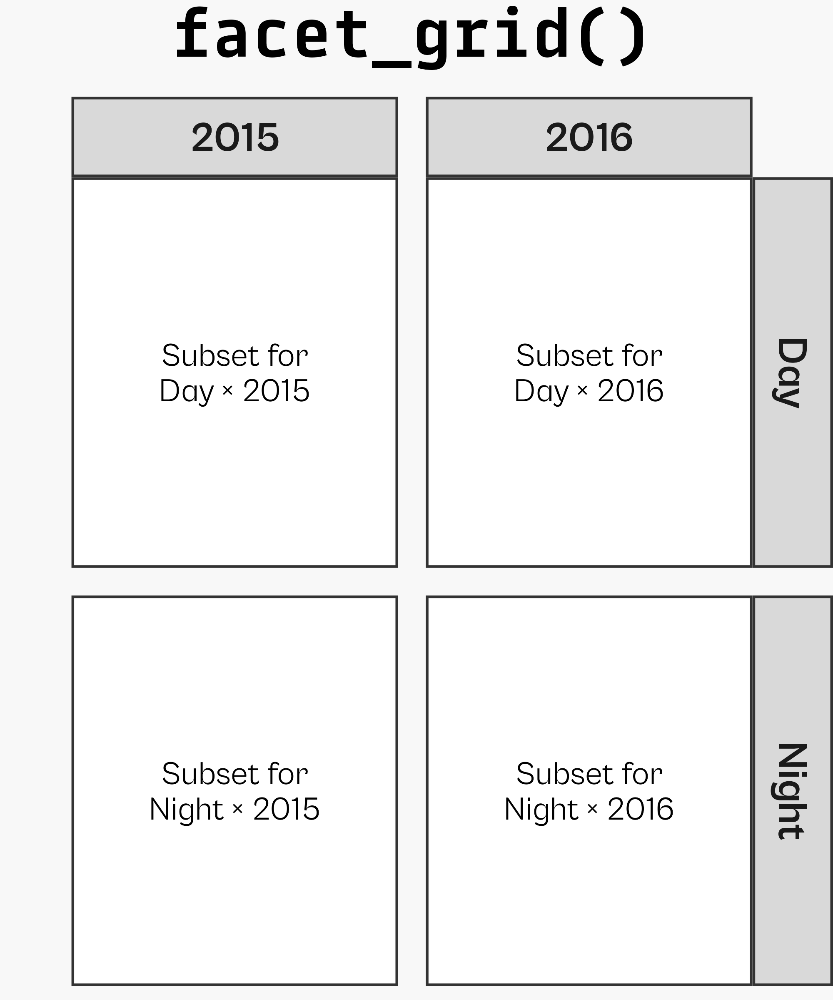

Reproducible Data Analysis with R
— Data Visualization with {ggplot2} —

The data science workflow, modified from “R for Data Science”

The data science workflow, modified from “R for Data Science”

{ggplot2} is a system for declaratively creating graphics,
based on “The Grammar of Graphics” (Wilkinson, 2005).
You provide the data, tell {ggplot2} how to map variables to aesthetics,
what graphical primitives to use, and it takes care of the details.

Illustration by Allison Horst

ggplot2 Examples featured on ggplot2.tidyverse.org

Illustration by Allison Horst


Selection of visualizations created 100% with ggplot2 by Thomas Linn Pedersen,
Georgios Karamanis, Timo Gossenbacher, Torsten Sprengler, Jake Kaupp, Jack Davison, and myself.

ggplot2::ggplot()

Aesthetic Mapping

Aesthetic Mapping

Aesthetic Mapping

Setting vs Mapping of Visual Properties

Your Turn: Geometries & Aesthetics

Your Turn: Geometries & Aesthetics


Source: Albert’s Blog
Your Turn: Bonus Exercise

Your Turn: Bonus Exercise

Local vs. Global Encoding


Adding More Layers

Global Color Encoding

The `group` Aesthetic

Overwrite Global Aesthetics

The position Argument


Modified from canva.com
Setting Plot Sizes in Rmd’s

Setting Plot Sizes via {camcorder}

Extend a ggplot Object: Add Layers

Extend a ggplot Object: Add Labels

Extend a ggplot Object: Add Labels

Complete Themes

Change the Theme Base Settings

Set a Theme Globally

Change the Theme Base Settings

{systemfonts} + {ggplot2}

Overwrite Specific Theme Settings

Overwrite Specific Theme Settings

Overwrite Specific Theme Settings

Overwrite Theme Settings Globally

geom_*() vs stat_*()

geom_*() vs stat_*()

geom_*() vs stat_*()

Statistical Summaries



Wrapped Facets

Wrapped Facets

Facet Multiple Variables

Gridded Facets

Facet Multiple Variables

Facet Options: Free Scaling

Facet Options: Proportional Spacing

Facet Options: Proportional Spacing

Facet Labellers

Facet Labeller


Illustration by Allison Horst
Aesthetics + Scales

Overwrite Scales

Modify Scales

Modify Scales
g +
scale_x_continuous(
expand = c(mult = 0.02, add = 0),
breaks = seq(0, 30, by = 5),
labels = function(x) paste0(x, "°C"),
name = "Feels-like temperature"
) +
scale_y_continuous(
expand = c(mult = 0, add = 1500),
breaks = 0:5*10000,
labels = scales::label_comma()
) +
scale_color_discrete(
type = c("#3c89d9", "#1ec99b", "#f7b01b", "#a26e7c")
)
Modify Scales
g +
scale_x_continuous(
expand = c(mult = 0.02, add = 0),
breaks = seq(0, 30, by = 5),
labels = function(x) paste0(x, "°C"),
name = "Feels-like temperature"
) +
scale_y_continuous(
expand = c(mult = 0, add = 1500),
breaks = 0:5*10000,
labels = scales::label_comma()
) +
scale_color_manual(
values = c("#3c89d9", "#1ec99b", "#f7b01b", "#a26e7c")
)
{RColorBrewer}

{RColorBrewer}

{rcartocolor}

Modify Scales
g +
scale_x_continuous(
expand = c(mult = 0.02, add = 0),
breaks = seq(0, 30, by = 5),
labels = function(x) paste0(x, "°C"),
name = "Feels-like temperature"
) +
scale_y_continuous(
expand = c(mult = 0, add = 1500),
breaks = 0:5*10000,
labels = scales::label_comma()
) +
scale_color_manual(
values = colors_sorted,
name = NULL
)
Date Scales

Date Scales

after_scale()

Cartesian Coordinate System

Cartesian Coordinate System

Fixed Coordinate System


Flipped Coordinate System


Flipped Coordinate System


Reminder: Sort Your Bars!

Circular Corrdinate System

Circular Corrdinate System

Transform a Coordinate System
Mapping of Visual Properties


Illustration by Allison Horst

Your Turn: An Advanced ggplot
- Create a similar visualization as close as possible:


The data science workflow, modified from “R for Data Science”